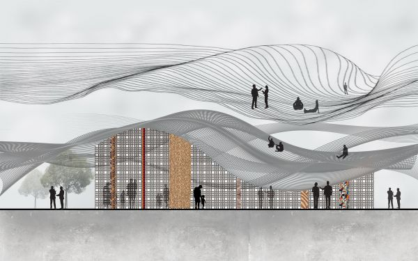
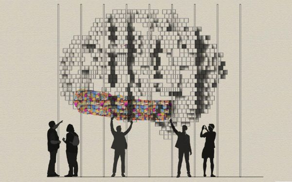
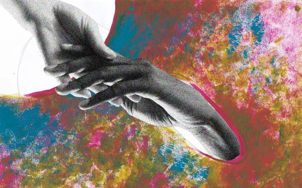

Mientras Dubai continúa estableciéndose como un punto de encuentro global para la comunidad internacional de diseño, tiene la responsabilidad de desempeñarse como líder en el apoyo al diseño regional. Al convocar a jugadores clave para que colaboren y presenten oportunidades de intercambio cultural, Abwab actúa como un punto de intersección recurrente para los talentos de la región y el público. 171 diseñadores han participado hasta la fecha.
En su quinta edición, los diseñadores de Abwab tienen el desafío de recrear las aulas locales de sus culturas, los diseñadores de la India, las provincias orientales de Arabia Saudita y el Líbano involucrarán al público con representaciones del tema de este año 'formas de aprendizaje'. El público tendrá la oportunidad de interactuar con cada pabellón como un espacio de reunión para que las personas experimenten la creación de la memoria y exploren la forma en que la información se comparte y se enseña en las respectivas culturas, por diseño.
Provincias orientales de Arabia Saudita Pabellón sportportado por Ithra | Sa'af de Azaz Architects | Sa'af es un proyecto dirigido por la investigación que trabaja para salvaguardar la artesanía nativa nativa del tejido de hojas de palma.
Pabellón de India | Qissa Ghar de The Busride Design Studio | Qissa Ghar pone en primer plano la unidad de la India en la diversidad mediante la creación de un recuento colaborativo de mitos de diversas culturas en todo el país.
Pabellón del Líbano | WAL (L) TZ por T Sakhi Architects | El estudio con sede en Beirut responde al tema de aprendizaje de este año con un muro interactivo que retrata las barreras sociopolíticas en nuestra sociedad.